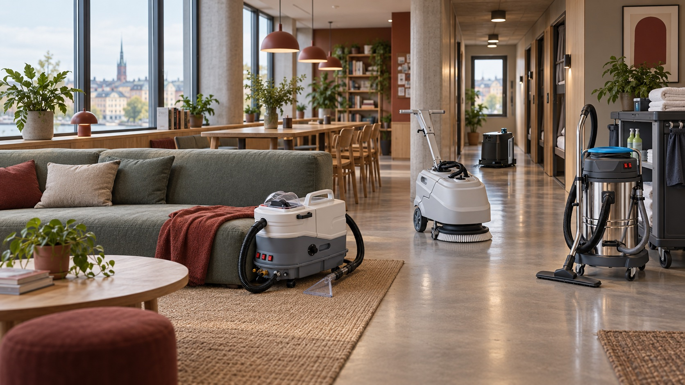

B2B EQUIPMENT SOURCING & SOLUTION PARTNER
Specify the right equipment.
Source it with confidence.
JingBear helps international buyers turn a cleaning or self-service requirement into a practical equipment shortlist — with model-level specifications, export coordination and project support.
Solutions
Start with the business problem.
Then choose the machine.
Professional Cleaning
Build practical equipment mixes for contractors, facilities, hospitality and daily maintenance.
Explore this solution ↗ 02Self-Service Business
Unattended equipment for location-based services, including shoe and helmet cleaning concepts.
Explore this solution ↗ 03Specialized Cleaning
Application-specific machines where process, site conditions or equipment format need closer matching.
Explore this solution ↗ 04Project & OEM Solutions
Coordinate mixed product lists, private-label specifications and destination-based export requirements.
Explore this solution ↗Equipment
Four procurement paths.
One coordinated conversation.
Cleaning equipment for working businesses.
Carpet & upholstery care, floor cleaning, commercial vacuums, pressure & steam washing, plus selected autonomous equipment.
Unattended equipment for location-based services.
Shoe and helmet cleaning machines for defined business concepts.
Project-specific cleaning equipment.
Special applications are assessed case by case.
Applications
Where the equipment
has to work.
The same machine can perform differently across markets. We start with application, destination, power, workflow and purchase model before confirming a configuration.
Contract cleaning
Floor, carpet, upholstery and wet/dry cleaning workflows.
02Hospitality & facilities
Guest areas, corridors, schools, offices and mixed-use buildings.
03Auto detailing
Vehicle interiors, extraction, vacuuming, steam and washing.
04Self-service locations
Shoe and helmet cleaning concepts built around a specific site.
Featured equipment
Documented models.
Ask for the right configuration.
Spray extraction + steam
A multi-function fabric and interior cleaning configuration for buyers who need extraction, vacuum and steam capability in one discussion.
View model →Commercial fabric cleaning
Documented 220 V / 50 Hz configuration with 1,000 W suction, foam and brush systems, and multi-tank water capacity.
View model →Steam-enabled fabric cleaning
Documented 220 V / 50 Hz configuration with a 3,300 W heater and stated steam temperature of 150 °C.
View model →How we work
Less catalog noise.
More procurement clarity.
Define the application
Start with what is being cleaned, where the equipment will operate and how it will be used.
Match the model
Compare specifications, configuration options and destination requirements before quoting.
Prepare the order
Coordinate packaging, lead time, export documents and delivery terms for the selected supplier configuration.
Plan support
Discuss spare parts, consumables and after-sales coordination alongside the equipment order.
International purchasing
One requirement.
A market-ready quote.
Tell us the destination, voltage/frequency, application, target quantity and purchase model. We’ll structure the next procurement step around what can actually be confirmed.
Request an equipment quote ↗Have a project or product list?
Bring us the requirement.
We’ll structure the shortlist.
Share your business type, destination, quantity and what the equipment needs to do. We’ll help identify the relevant product path.
Talk to JingBear ↗